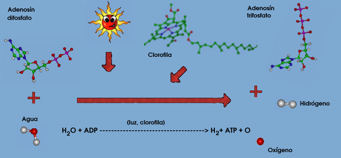

La fotosíntesis consta de dos fases, la fase luminosa necesita de la luz para llevarse a cabo, por lo tanto sólo se lleva a cabo durante el día. Primero, la clorofila de las plantas y de las algas captura la energía luminosa. Esta energía queda atrapada entre los enlaces de las moléculas de clorofila excitándola.
Con esa energía, las células fragmentan las moléculas de agua que hay en su interior en sus dos componentes: hidrógeno (H), y oxígeno. Las moléculas de oxígeno se unen en pares, para formar el oxígeno que es liberado hacia la atmósfera (O2) y las de hidrógeno(H2) forman un gradiente el cual es aprovechado para formar energía química *(ATP)*.
Si te cuesta trabajo imaginar esto piensa en un represa, en ella formas un lago artificial y el agua al querer seguir su cause natural sale con bastante fuerza, nosotros los seres humanos usamos bobinas o ?molinos? que nos sirven para aprovechar esa fuerza y realizar un trabajo como el producir luz eléctrica, igual la *célula* al recibir energía luminosa y romper el agua (H2O) en hidrógenos y oxígenos desechando el oxigeno y guardando dentro del *cloroplasto* muchos hidrógenos, crea una especie de represa de hidrógenos y este al salir del interior del cloroplasto con una cierta energía esta se utiliza para formar energía química en forma de *(ATP)* la cual es utilizada por la planta y por todos los seres vivos en miles y millones de distintas funciones.
Ver fase obscura *icono*
